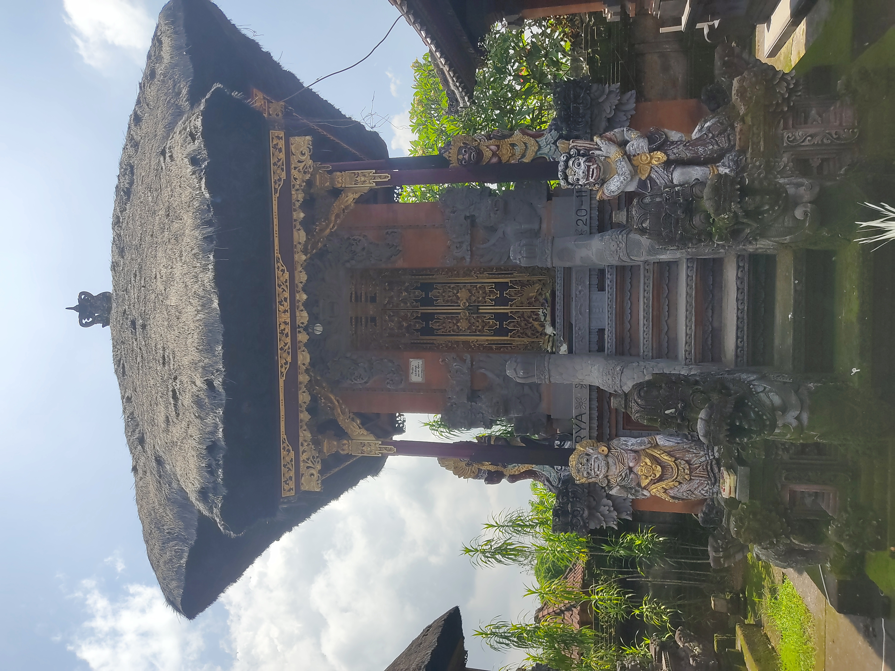

Pura Dalem Wayah
Deskripsi Pura Dalem Wayah
Pura Desa lan Puseh Desa Adat Buduk terletak di Jalan Raya Buduk, Buduk, Kecamatan Mengwi, Kabupaten Badung, Bali. Pura Desa lan Puseh Desa Adat terbentuk karena Kerobokan melakukan renovasi pada tahun 2018 dan diresmikan kembali pada tahun 2019. Piodalan jatuh pada Pemacekan Agung, Soma Kliwon, Wuku Kuningan. Di dalam pura ini diperoleh 6 artefak, 13 pelinggih, 2 gedong, 2 papelik, dan 4 bale. Di Pura Desa Lan Puseh Desa Adat Kerobokan terdiri dari 52 Banjar yang terdiri dari Kelurahan Kerobokan, Kelurahan Kerobokan Kaja, Kelurahan Kerobokan Kelod, Kelurahan Seminyak, Desa Padang Sambian Kaja, Desa Padang Sambian Kelod. Di Desa Adat Kerobokan terdapat 1 Pura Desa Lan Puseh dan 8 Pura Dalem
Denah Pura Dalem Wayah

Pelinggih Pura Dalem Wayah
objek 1
objek 2
objek 3
objek 4
objek 5
objek 6
objek 7
Foto
.jpg)



Nama
Patmasana
Gedong
Ratu Mas Manik Galih
Ratu Ramut Sedana
Pepelik
Ratu Biang
Ratu Nyoman Agung
Deskripsi Singkat
Pelinggih ini juga dapat disebut dengan Linggih Batara Siwa yang mana pemujaan terhadap dewa Siwa sebagai dewa pelebur.
Gedong didedikasikan kepada dewi Durga (Dewi Gayatri).
Pelinggih ini melambangkan seorang ratu.
Pelinggih ini melambangkan seorang ratu yang bermahkota seperti seorang dewi.
Pelinggih ini memiliki bentuk yang terbuka dari tiga sisi.
berfungsi sebagai penjaga pelinggih ini memiliki ukiran dan ornamen patung yang menyeramkan.
Pelinggih ini dipercayai sebagai pengawal atau penjaga untuk menangkal energi negatif saat memasuki pura.
Panjang
182 cm
559 cm
234 cm
234 cm
221 cm
429 cm
169 cm
Lebar
195 cm
377 cm
156 cm
156 cm
195 cm
130 cm
169 cm
tinggi